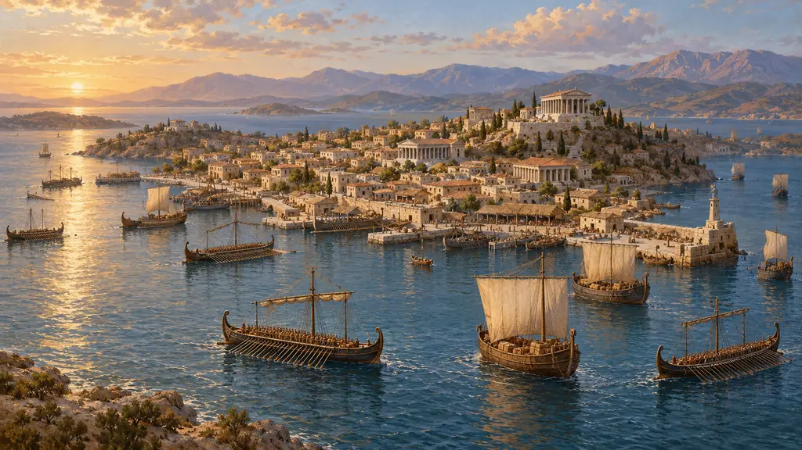
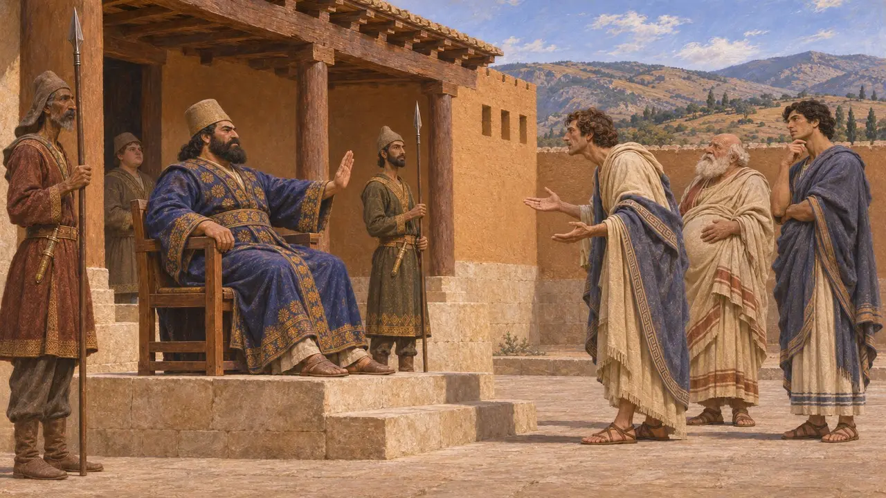
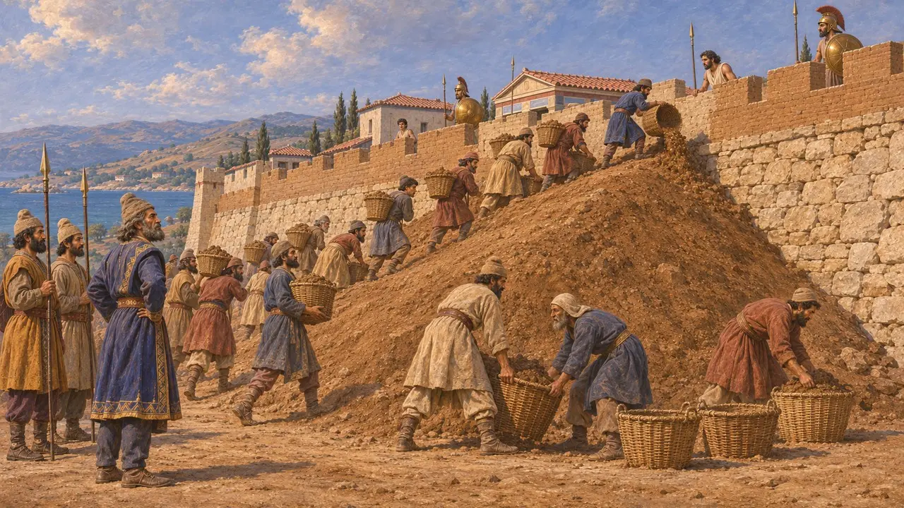
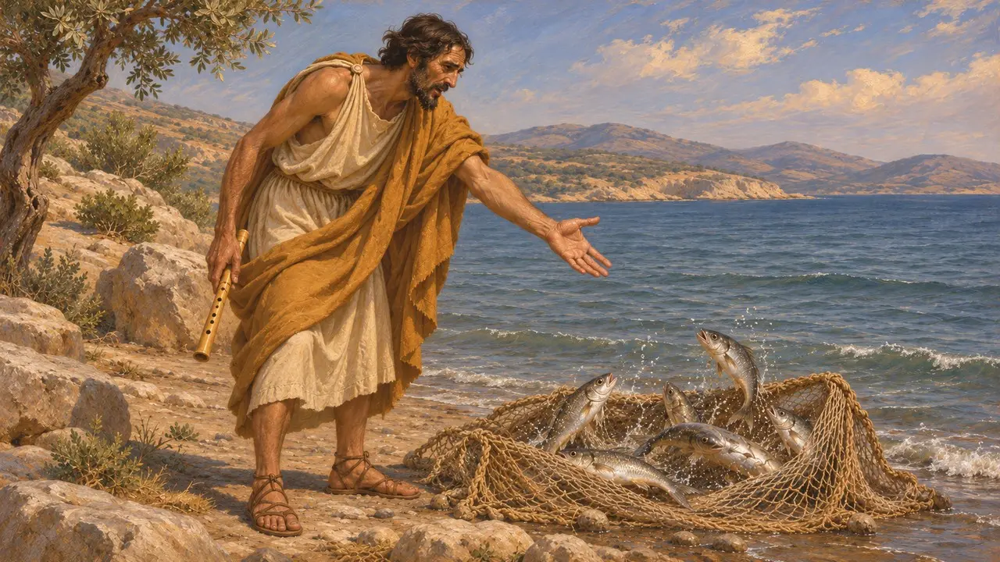
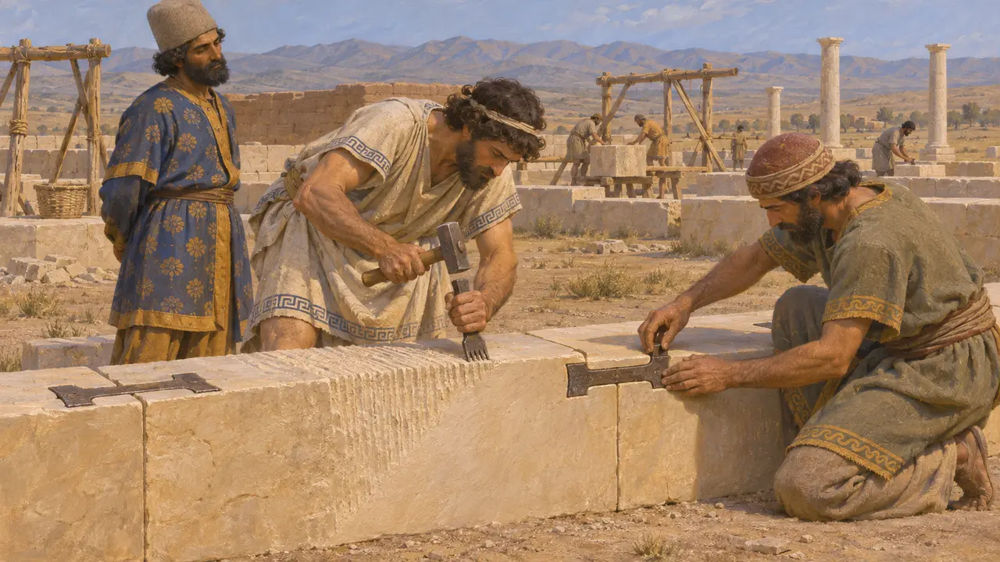
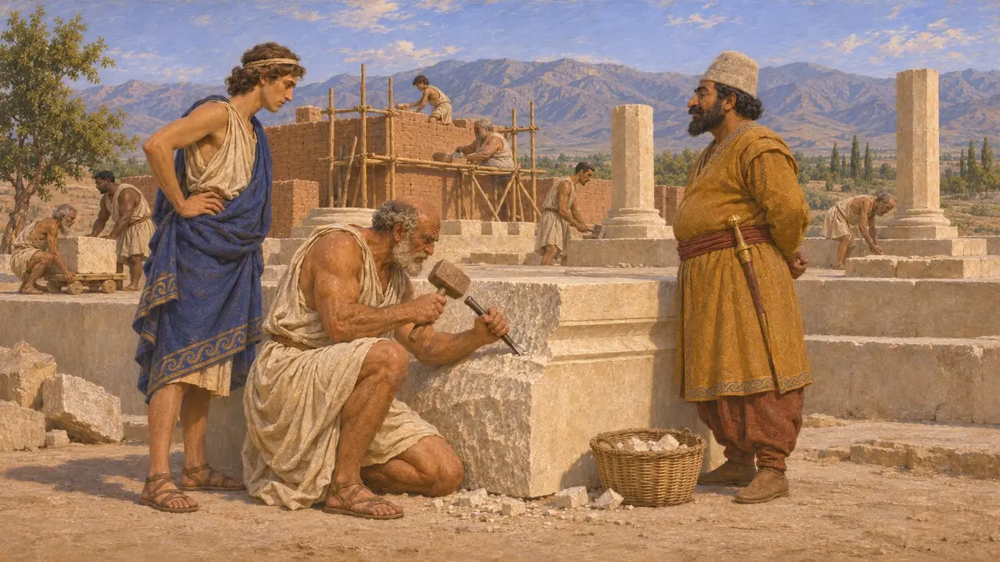

Энциклопедия › Битвы и события

Завоевание Ионии Гарпагом
Персидский поход против греческих городов Малой Азии, около 546–545 годов до н. э.
В игре: Уровень 1: Гробница основателя
После того как Кир взял Сарды, греческие города ионийского побережья, прежде подчинявшиеся лидийскому царю Крёзу, предложили покориться на прежних условиях, но Кир отказал. Геродот рассказывает, что Гарпаг, мидянин, помогший Киру свергнуть Астиага, затем покорял их одного за другим с помощью осадных насыпей в середине 540-х гг. до н. э. Это завоевание, вероятно, привело ионийских и лидийских мастеров на службу Царя, и их приёмы видны в каменной кладке Пасаргад.
В игре: Игра показывает, как Гарпаг берёт прибрежные города с помощью земляных насыпей, как у Геродота, и связывает его с ионийскими каменотёсами в Пасаргадах. Дата 546-545 гг. до н. э. приблизительна, а происхождение каменщиков выведено по технике.

Отказ и восстание Пактия
Античное свидетельствоГеродот пишет, что ионийцы и эолийцы отправили к Киру в Сарды послов, предлагая покориться на тех условиях, на которых они жили при Крёзе. Кир отказал, поскольку они пренебрегли его прежним призывом отложиться от Крёза, и такие условия даровал лишь Милету. Вскоре лидиец Пактий, оставленный охранять золото Крёза, поднял мятеж. Мидянин Мазар подавил его, обратил в рабство жителей Приены и разграбил равнину Меандра, а затем заболел и умер.
Herodotus 1.141, 1.153-161

Гарпаг и осадные насыпи
Античное свидетельствоГарпаг сменил Мазара и, по словам Геродота, брал города так: запирал защитников за их стенами и насыпал против них земляные валы. Фокейцы покинули свой город и отплыли на запад, хотя более половины вскоре вернулись, а жители Теоса ушли основать Абдеры во Фракии. Остальные города на материке сражались и пали один за другим, а ионийские островитяне сдались. Затем Гарпаг двинулся на Карию и Ликию.
Herodotus 1.162-176

Флейтист и рыбы
Позднейшая легендаГеродот заставляет Кира ответить ионийским послам басней. Флейтист играл рыбам, чтобы выманить их на берег, а когда они не вышли, поймал их сетью. Когда они бились в сети, он сказал им, что танцевать теперь поздно. История служит моралью о том, что покоряться нужно вовремя, и она больше обязана греческому искусству рассказа, чем какому-либо свидетельству о словах Кира.
Herodotus 1.141

Ионийские и лидийские мастера в Пасаргадах
Свидетельства эпохиРаскопки в Пасаргадах показывают приёмы кладки, новые для Персиды: тонко подогнанные швы, зубчатое долото и железные скобы «ласточкин хвост», скрепляющие блоки. Карл Нюландер возводил эти приёмы к лидийским и ионийским мастерским, что наводит на мысль о мастерах, пришедших на восток после взятия Сард и побережья. Ни один текст эпохи Кира не называет этих работников. Более поздняя Хартия Суз Дария действительно упоминает ионийцев и сардийцев, обрабатывавших камень в Сузах.
D. Stronach, Pasargadae, 1978; C. Nylander, Ionians in Pasargadae, 1970; DSf

Датировка завоевания
СпорныйГеродот не называет года. Падение Сард обычно относят примерно к 547 г. до н. э. или 546 году до н. э., отчасти на основании записи в Хронике Набонида за 547 год до н. э., где название страны повреждено и вовсе может не быть Лидией. Таким образом, Иония пала в середине 540 г. до н. э.-х годов, но точные годы неизвестны. Учёные также спорят, началось ли строительство в Пасаргадах до или после прибытия лидийских и ионийских мастеров.
Nabonidus Chronicle; P. Briant, From Cyrus to Alexander, 2002
Источники
- Herodotus 1.141-176
- C. Nylander, Ionians in Pasargadae, 1970
- D. Stronach, Pasargadae, 1978
- P. Briant, From Cyrus to Alexander, 2002
- DSf
- Nabonidus Chronicle